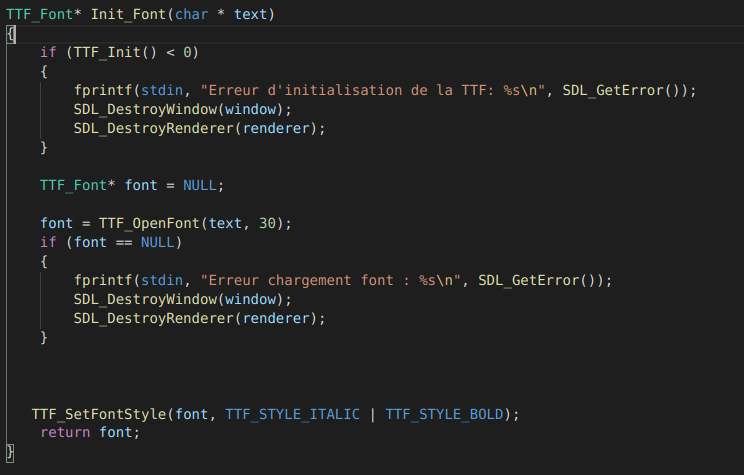
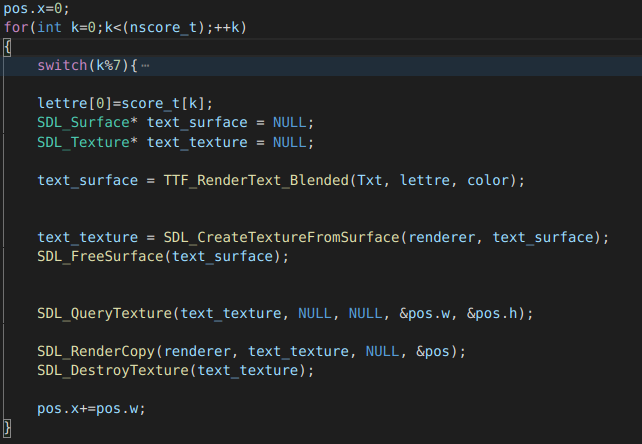
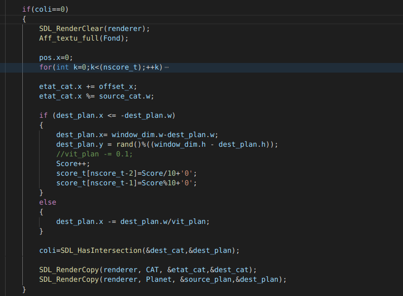
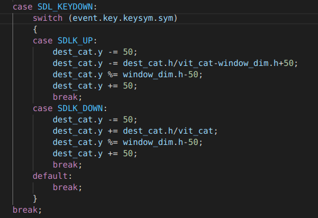

la prochaine exercice etait la gestion de l'ecriture sur la fenetre :
On va pour cela utiliser la librairie TTF puis on ouvre la font desiré

une fois la font initialiser on peut l'utiliser pour afficher un message

Suite aux quelques exercices qui ont été présentés par mes camadares on a commencé à realiser un premier chef d'oeuvre :
L'idée est partie d'une envie de refaire un meme de l'internet, le NYAN CAT :
Une fois l'animation créée lors de l'exrcice sur les animations, on s'est dit que l'on aller se reservir de cette animation pour créer notre chef d'oeuvre.
Le but est d'aider le petit chat à éviter les planètes lors de son exploration de l'espace
En plus de différentes boucles ou fonctions déjà vu je voulais présenter deux partie du code :


Liens vers le fichier du code C : NyanCat / NyanCat
Retourner à la page précédente